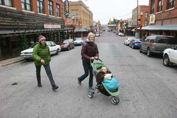
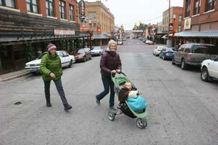
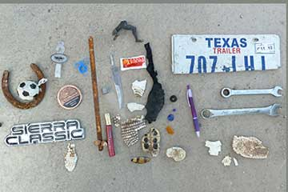
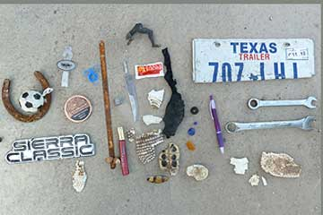
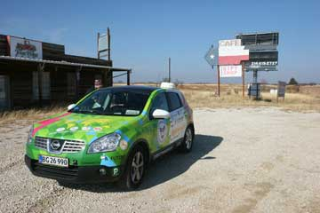
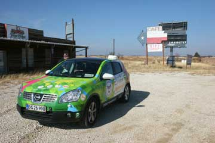
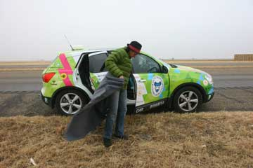
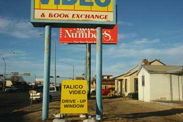
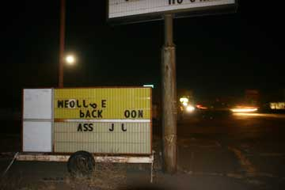
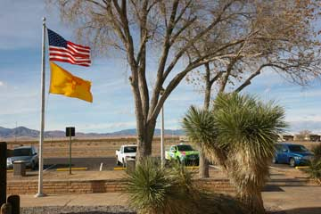

Vi ville shoppe før Idas afrejse fra Dallas til Virgin Islands i morgen. I Fort Worth besøgte vi et historisk kvarter med en masse turistbutikker med cowboytøj. Der var mange fine ting, og meget skrammel. Men vi købte ingenting, det var for dyrt. Der var støvler til 10.000 dollars. Vi spiste frokost i en cowboy grill og brugte så eftermiddagen på at se to store kunstmuseer. Det vrimlede med mennesker der havde brug for at få en dag i juleferien til at gå med noget kulturelt. Der foregik ikke så meget andet, meget var lukket i Fort Worth, så det var museernes travleste dag. Elliot var med til det hele i sin klapvogn, og som altid i godt humør.
Nina
 

I strålende sol gik vi en halvanden times tur langs landevejen for at give Grønne lidt ekstra ladetid. Flere biler standsede og spurgte venligt om vi var OK? Det er ikke almindeligt at nogen går på deres ben. Der er hjul under fra vugge til grav. Vi nåede til sidst frem til en kirkegård hvor gravene var smukt dekorerede med plasticblomster. På tilbagevejen blev vi opmærksomme på hvad der lå i vejkanten, hvor ingen mennesker havde gået i mange år. Vi fandt blandt andet en gammel rusten hestesko, en savklinge, overkørte bæltedyr og skildpadder, rester af billygter, bildæk og spejle, to skruenøgler, en veterinær injektionssprøjte, mascara, tomatketchup fra MacDonalds, skruer og bolte, mange cigaretskod og knuste spiritusflasker, låget af en dåse snus, et prisskilt fra en skjorte, en kuglepen og en nummerplade. Dagen sluttede på et motel i Fort Worth.
Nina
 

I morges var der igen is på Grønne, og da vi kørte satte vi el-varme på kabinen indtil solen havde varmet vognen op. Elliot måtte have en ren ble halvvejs til Wichita Falls. På en ny campingplads for RVs havde de både vielseskapel og - meget overraskende - en mongolsk jurte. Vi havde ikke brug for det første da vi har været gift i 35 år men nød den anden, Den amerikanske kopi var rund som teltene er i Mongoliet, men indrettet helt på amerikansk med springmadrasser, quiltede tæpper, air-condition, toilet, køleskab, mikrobølgeovn, kaffemaskine tv og internet. Kønt og behageligt, og vi syntes at vi havde fortjent det, ligesom de siger i reklamerne. Og Grønne fik sin egen RV plads med ladestander. I nogle af de store RV´s boede folk som flyttede rundt efter hvor de kunne få arbejde - camp-workers.


Grønne var dækket af is da vi vågnede. Batterierne var næsten frosne, men bilen starede som normalt. Og den havde samme rækkevidde som på varme dage fordi batterierne varmer op når de bliver brugt. Solen skinnede koldt på det gule græs fra en blå himmel. Landet syntes tømt for mennekser. I Vernon fandt vi et motel drevet af indere - vi kunne lugte karry'en i lobby'en. Det var eftermiddag og vi gik en lang tur i byen. Det virkede som om byen var forladt for lang tid siden. Benzintanke, reklamer og butiksfacader fra 1960'erne - alle forladte. Kun bedemanden havde nye skinnende biler og et moderne hus. Vi koblede Grønne til aircondition-stikket i vores hotelrum. Vi begynder at vide hvor vi finder 220 V.
Hjalte

Vi gik morgentur mellem canyon'ens bjergformationer, som tog sig betagende ud i det kolde solskin. Vejen til Memphis gik først op og ned, men landet blev efterhånden helt fladt. Næsten ufatteligt fladt strakte det sig kilometer efter kilometer med afhøstede korn- og bomuldsmarker. I centrum af Memphis var der næsten kun marskandiserbutikker. Mange var lukkede for altid og i vildt forfald. En kirke reklamerede for sig selv med en lille lysavis, Der var ingen mennesker ude, byen var som uddød, men vi havde jo holdt jul, så vi kunne slappe af. Jernbanen ved siden af byen dundrede forbi med lange vemodige fløjt. På motellet varmede vi indisk mad fra en dåse i værelsets mikrobølgeovn. Grønne fik stikket fra varmeblæseren med en ledning ud ad døren, så vi krøb tidligt i soveposerne for ikke at fryse.
Nina


I aften vil vi fejre jul, så vi køber godt ind i Amarillos eneste helsekostforretning. På vejen til Palo Duro Canyon State Park besøger vi The Panhandle Plains Historical Museum i Canyon. Et superinteressant, informativt, engagerende og stort museum der fortæller det nordlige Texas' historie fra stenalderen til indianerne, nybyggerne og nutiden med olie og stor-landbrug. Palo Duro er USAs næststørste canyon og vi har lejet en hytte helt nede i bunden. Den er ganske lille, af sten og iskold. Den ligner noget fra en eventyrbog, men der er intet køkken. Ildstedet må vi ikke bruge på grund af brandfaren, så vi tænder en varmeblæser. På Idas campingbrænder koger vi risengrød og laver gløgg. Et lille elektrisk juletræ som vi har købt i Wallmart bliver foldet ud og vores julelamper hængt op. Så synger vi alle julesangene for Elliot, som har fået lidt nyt legetøj. Bagefter hører vi krimi fra computeren og falder i søvn i den store dobbelte køjeseng i soveposerne. Grønne har fået sin egen plads med ladestander lige i nærheden, hvor den står og suger lækker 220 volt strøm i sig under den enorme stjernehimmel.

Først da vi begyndte at pakke bilen opdagede vi at generatoren var stjålet! Også voltmeteret, en mobiltelefon og et tæppe manglede. Vi ærgrede os uden at kunne stille noget op. En bidende kold, grå og trist dag. Klokken 9 passerede vi grænsen til Texas, og da vi nu kørte helt uden sikkerhedsline havde vi ingen varme i bilen for at spare på strømmen. Til siderne så vi den moderne landbrugs-industri med kæmpestore siloer og koncentrationslejre for mange tusinde køer der bliver opfedet. Så kom uendelige marker med majs og bomuld. Prærien var fuldstændig flad og vejen komplet lige. Her og der så vi fattige rønner, rustne maskiner og bilvrag. De små industrier og små landbrug var gået i forfald. I Amarillo solgte de Honda generatorer, men ikke med 220 volt. Politiet i Clovis havde ikke fundet vores generator. Så enten skal vi fortsætte uden eller få en sendt fra Danmark. Om aftenen spiste vi på en historisk bar på Route 66 med Elliot i klapvognen.

Solen skinner og der er langt mellem byerne så vi holder frokostpause i en uendelig stor afhøstet majsmark i frisk blæst. Om aftenen går vi tur i Clovis langs hovedvejen, som også er byens hovedgade. Der er ingen fortove, men tung trafik og masser af skilte. Vi er de eneste som går tur til fods. På tilbagevejen går vi gennem et mørkt fattigkvarter med en trist blanding af små forfaldne træhuse og fastgroede autocampers. Det er næsten fuldmåne, en hund gør og en oppustet plasticsnemand står og pynter foran et hus. En ejer af et lidt større hus har hængt mange lyskæder op. Ellers er der ikke meget jul at se - de fleste butikker er ikke pyntede. Kun en rund krans med en rød sløjfe hænger her og der. Vi vandrer tilbage til motellet og sætter Grønne til at lade fra airconditionstikket.


De sidste bjerge før den store prærie var for hundrede år siden gemmested for banditter og slagmark for skruppelløse forretningsfolk. Mest berømt og berygtet i Lincoln-country hvor 1874 og 75 var rene krigsår. Lincoln er idag en lille næsten uddød flække med et interessant museum og flere bevarede wild-west huse. Her dræbte Billy the Kid to vagter og flygtede fra arresten. Vi brugte flere timer i Lincoln og kan anbefale et besøg. Vejen fortsatte ned til UFO byen Roswell, hvor der foran en butik stod et skilt med Aliens welcome! Det morede Grønne sig over. På et motel lejede vi et værelse hvor vi kunne bytte varmeapparetets stik ud med et ladestik til Grønne. Det er blevet for koldt til at campere, så vi må fra nu af satse på at lade fra motellerne.
Nina og Hjalte

Dagen begyndte med varme bade på hotel Charles' badeafdeling. Helt slappe i benene gik Hjalte og jeg op på RV pladsen hvor vi fandt Grønne helt opladet. Vi gik ind på kontoret og betalte for 10 timers opladning. Det blev 4,50 dollars for strømmen, og vi fik gode ønsker med på vejen. Så pakkede vi sammen, købte ind, og spiste brunch. Senere holdt vi en times pause i San Antonio, hvor vi købte et par gamle nummerplader i en antikbutik. Den venlige danske Anne Lund drev benzintank med en lille butik og cafe, og da vi fortsatte havde vi fået både kaffe og kage og strøm. Det blev hurtigt mørkt. Fuldmånen skinnede over det store øde landskab, der var hundrede kilometer til den næste by. Syd for landevejen lå White Sands Missile Range hvor verdens første atombombe blev sprængt i 1945. Der var nogle lange bakker vi skulle op over inden vi kunne trille hurtigt nedad. Men 20 kilometer før mål var strømmåleren på 0. Så var det frem med generatoren i en time ved siden af den mørke landevej. Nåede så frem til Rainbow Inn i Carrizozo. Vi fik et værelse og Grønne fik en ladeledning ud ad døren.